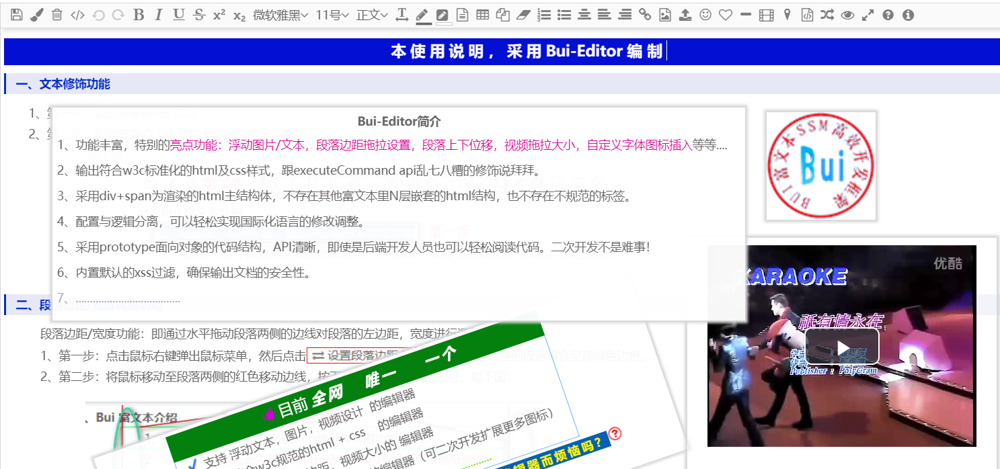
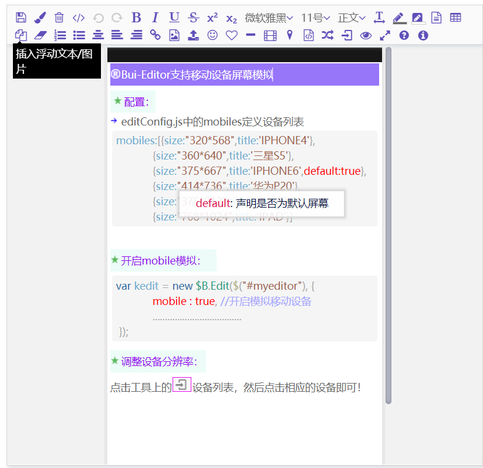
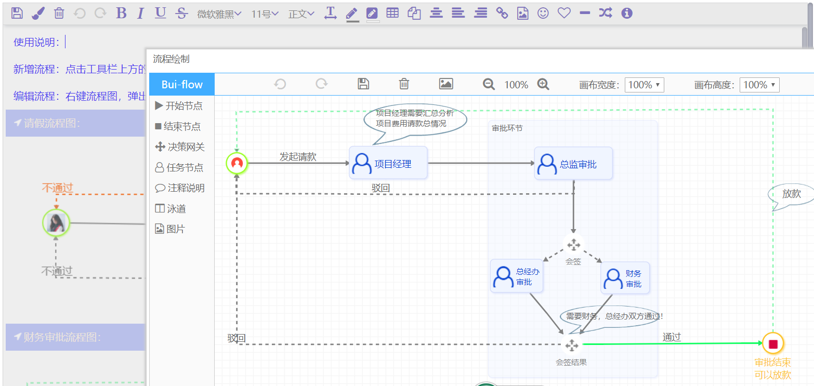

前言
最近在Gitee上放出了个人花费大量时间精力打造的富文本，受到了部分网友们的关注。部分网友对富文本涉及到的技术，设计实现都很感兴趣。特别是对比目前市面上的富文本后，丰富的功能更是令关注的网友们好奇。因此我想就这个富文本的开发过程，做一个简单的系列博客，介绍这个富文本从技术选型，技术难点，核心功能设计实现等方面。也希望对有兴趣阅读富文本源码需求的网友有所帮助。
富文本截图：
浮动文本、图片、视频功能

模拟移动屏幕功能

绘制流程图功能：

技术选型探讨：
目前市面上流行的前端技术栈如下：
1、vue技术栈
2、react技术栈
3、angular技术栈
4、jquery技术栈
前三者技术栈都是具有响应式设计思想，mvvm模式的框架。这三者框架都有自己的设计语言风格，对编程实现都有固定的模式要求。后者jquery是一个老牌的dom操作框架，除了dom操作，其他功能都相对较弱，但这也使其在应用上的设计组合比较灵活。
富文本技术场景分析：
基础结构：
富文本组件通常由一个div、textarea作为输入域，其修饰功能为一组用于交互的工具栏按钮，同时需要一个鼠标右键菜单。从这里可以看出，富文本自身的基础结构是不复杂的。
富文本中的内容是由html包装用户输入内容而成，其结构根据用户输入而定，具有不确定性，多样性。从这方面看，富文本的内容结构是复杂的。
事件场景：
富文本的事件相对于普通的表单事件场景，要求更高，对各类用户事件响应要做出详细的区分，比如一个元素需要区分mouseup、mousedown、click、并分别做不同的响应处理。
同时，富文本内容中动态生成的html结构，如image、table需要动态绑定/解除对应的事件。
修饰表现场景：
富文本中的修饰是根据用户操作而形成的，具有不定性，多样性。
平台场景：
通常情况下，富文本应用都是指pc端的富文本编辑器，移动端富文本由于移动端的特性，难以做到和pc一样的功能，同时也不合适做到一致的功能。移动端的富文本应该根据移动设备的特点进行独立的设计，所以个富文本是不考虑适用于移动端设备的。
最终选型：
通过上面的分析可知，富文本自身固定的结构是简单的，这些固定的结构也不需要响应用户的输入。而富文本动态的内容形成的结构是不确定的，变化复杂的，这些变化的结构内容需要响应用户的输入交互。
问题1：是否需要应用响应式？
不适用于移动设备的富文本，不需要响应式。
问题2：是否需要双向联动？
无双向联动的场景需求。
问题3：是否适用于模板机制？
固定的结构不复杂，可变结构复杂，不适用于模板机制。
问题4：那种框架才能灵活设计编写代码？
vue、react、angular这些框架都有一定的编程规范，反而形成了束缚。采用原生JavaScript是最灵活的，为减低dom操作的编程工作，可加入jquery。
最终选型： 原生JavaScript prototype面向对象 + jquery dom操作库。
后期扩展：
后期可在 核心代码的基础上，做一次 vue 或者 react的 包装外壳，实现适配vue、react技术栈的项目。
Gitee : https://gitee.com/kevin-huang/Bui-Editor-public